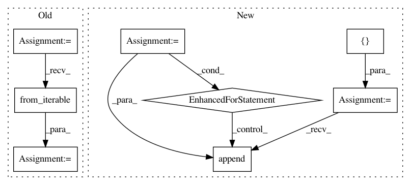

defee23185b16afd836bad0a6cce7f791328666e,dipy/workflows/multi_io.py,IOIterator,file_existence_check,#IOIterator#Any#,270
Before Change
def file_existence_check(self, args):
// unpack variable string
unpack_args = list(chain.from_iterable(args))
input_args = [fname for fname in list(unpack_args)
if isinstance(fname, str)]
for path in input_args:
if len(glob(path)) == 0:
raise IOError("File not found: " + path)
After Change
def file_existence_check(self, args):
input_args = []
for fname in args:
if isinstance(fname, str):
input_args.append(fname)
// unpack variable string
if isinstance(fname, list) and all(isinstance(s, str)
for s in fname):
input_args += [f for f in fname]
for path in input_args:
if len(glob(path)) == 0:
raise IOError("File not found: " + path)
In pattern: SUPERPATTERN
Frequency: 3
Non-data size: 8
Instances
Project Name: nipy/dipy
Commit Name: defee23185b16afd836bad0a6cce7f791328666e
Time: 2020-02-03
Author: skab12@gmail.com
File Name: dipy/workflows/multi_io.py
Class Name: IOIterator
Method Name: file_existence_check
Project Name: OpenNMT/OpenNMT-py
Commit Name: bd7096d17a03f2c9375c7492f9e680e5cca7058e
Time: 2019-02-15
Author: dylan.flaute@gmail.com
File Name: onmt/inputters/dataset_base.py
Class Name: Dataset
Method Name: __init__
Project Name: pantsbuild/pants
Commit Name: 954a38a74bab0cd688b68393ff16313686cea7e0
Time: 2020-09-03
Author: 14852634+Eric-Arellano@users.noreply.github.com
File Name: src/python/pants/backend/python/lint/pylint/rules.py
Class Name: PylintPartition
Method Name: __init__